1. Feature Extraction & Matching
Color spaces, edges, SIFT, HOG, Harris corners, Hough transform, feature matching
1. Color Systems
Before extracting features, we need to understand how images encode color. Different color systems emphasize different properties of light, and choosing the right one can make feature extraction more robust.
RGB (Red, Green, Blue)
The human eye has three cone types responding to long (~570nm, red), medium (~540nm, green), and short (~440nm, blue) wavelengths. Camera sensors replicate this with a Bayer filter pattern: 2 green, 1 blue, 1 red cell per pixel (green doubled because human vision is most sensitive to green).
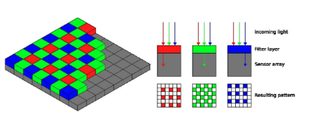
HSV (Hue, Saturation, Value)
HSV separates color from lighting, making it more useful for many CV tasks:
- H (Hue): The color itself, angle in $[0, 360)$. 0 = red, 120 = green, 240 = blue.
- S (Saturation): Color purity, $[0, 1]$. 0 = grey, 1 = purest color.
- V (Value): Brightness, $[0, 1]$. 0 = black.
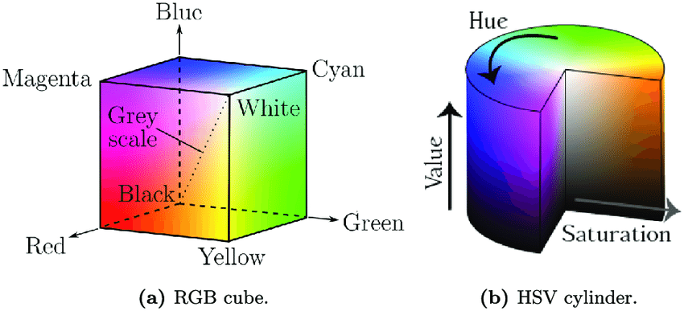
CMYK (Cyan, Magenta, Yellow, Black) is a subtractive model used in printing. Mixing colors subtracts wavelengths from white light.
YUV separates luminance (Y) from chrominance (U, V). The human eye is more sensitive to brightness than color, which is exploited in video compression.
2. Features and Image Matching
The core problem: given two or more images, how do we determine if they show the same scene? This is image matching, and it requires extracting features — pieces of information relevant to solving a computational task.
Image Matching Pipeline
- Extract features invariant to geometric (translation, rotation, scale) and photometric (brightness) transformations
- Compute descriptors — mathematical representations of local image regions
- Match descriptors between images by comparing their vector representations
Requirements for Good Features
| Requirement | Explanation |
|---|---|
| Discriminative | Captures important nuances distinguishing image regions |
| Descriptive power | Allows rich mathematical descriptions (high-dimensional vectors) |
| Sufficient quantity | Hundreds or thousands per image |
| Low computation cost | Real-time performance achievable |
| Generality | Found in various image types, not limited to specific scenes |
3. Canny Edge Detection
An edge is a location with a significant change (gradient) in pixel intensity, corresponding to boundaries, texture changes, or shadows. The Canny detector was designed to satisfy three criteria: optimal detection (low error rate), good localization, and single response per edge.
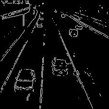
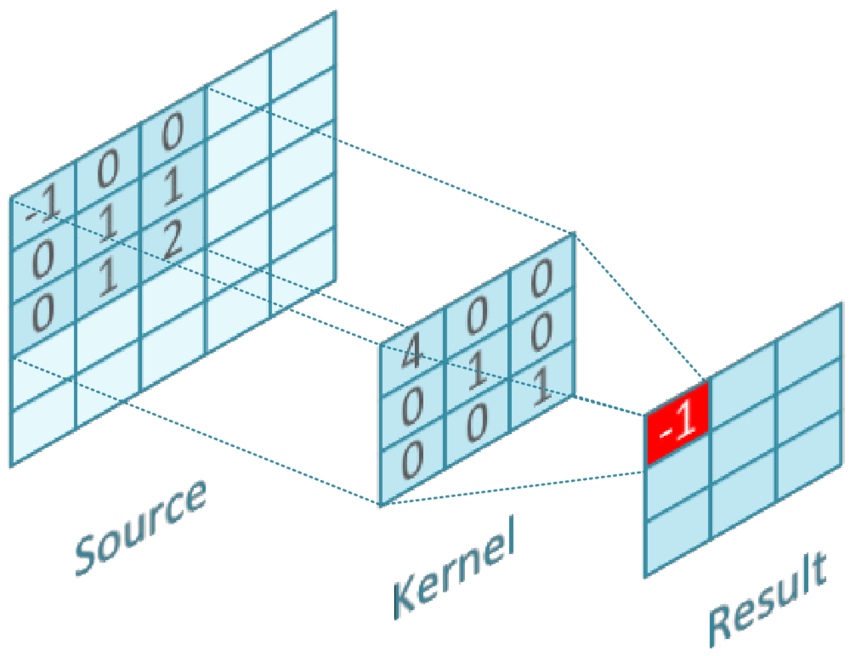
Edit the image grid values, choose a kernel, then step through (or animate) to see convolution computed cell by cell.
Sobel filters compute gradients in X and Y directions:
$G_x$ detects vertical edges. $G_y$ detects horizontal edges. Combined: $G = \sqrt{G_x^2 + G_y^2}$, $\theta = \arctan(G_y / G_x)$.
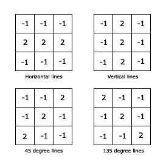
4. HOG Descriptor (Histogram of Oriented Gradients)
Edges alone have limited descriptive power and are not rotation-invariant. HOG captures the distribution of gradient orientations in local regions, providing a richer, rotation-invariant feature.
HOG Pipeline
- Split image into 8x8 blocks
- Compute gradients (magnitude + orientation) at each pixel
- Create 4x4 sub-windows, quantize gradients into 8 direction bins
- Build histogram per sub-window (8 bins, weighted by magnitude)
- Find dominant orientation of the block
- Normalize the descriptor relative to the dominant orientation (rotation invariance)
- Concatenate histograms into the HOG feature vector
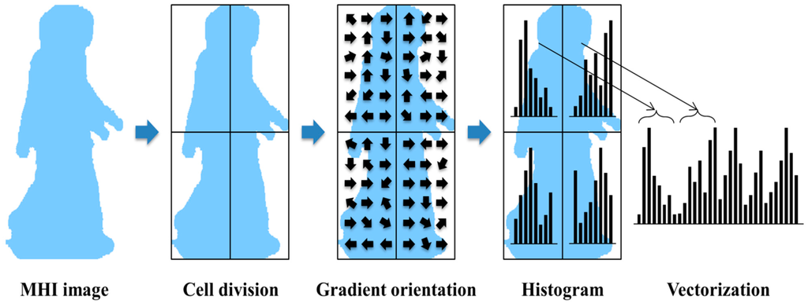
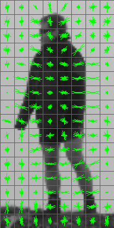
| Property | HOG |
|---|---|
| Descriptive | Yes — captures gradient distribution |
| Rotation-invariant | Yes — dominant orientation normalization |
| Scale-invariant | No — key limitation |
5. SIFT (Scale Invariant Feature Transform)
Edge points lack descriptive power. HOG is descriptive and rotation-invariant but not scale-invariant. SIFT addresses all three: scale invariance, rotation invariance, and rich 128-dimensional descriptors.
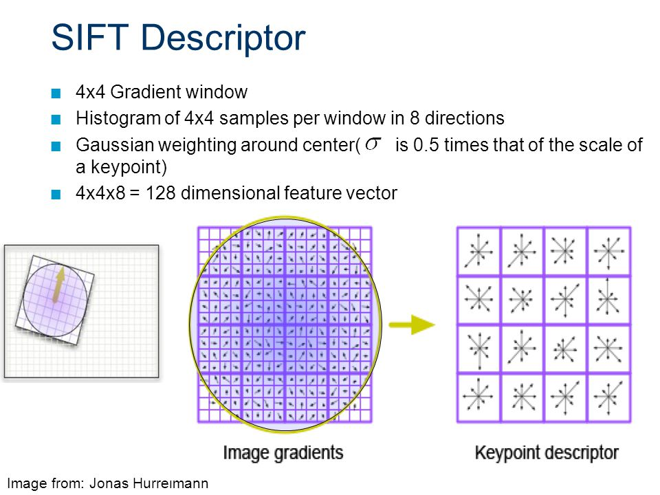
| Property | Edge | Harris | HOG | SIFT |
|---|---|---|---|---|
| Descriptive | Low | Low | High | Highest (128-D) |
| Rotation-invariant | No | Yes | Yes | Yes |
| Scale-invariant | No | No | No | Yes |
6. Feature Matching
Given features from two images, find correspondences by comparing descriptor vectors.
Euclidean Distance Matching
For each feature $\mathbf{f}_1$ in Image 1, compute the L2 distance to every feature $\mathbf{f}_2$ in Image 2:
The closest match (smallest distance) is the candidate correspondence. Complexity: $O(N \times M \times D)$.
Improving Match Quality
- Lowe's ratio test: Accept match only if $d_1 / d_2 < 0.8$ (best vs second-best). Rejects ambiguous matches.
- Cross-checking: Verify mutual nearest neighbor — if A matches B, B must also match A.
- Approximate search: KD-trees or FLANN for large feature sets.
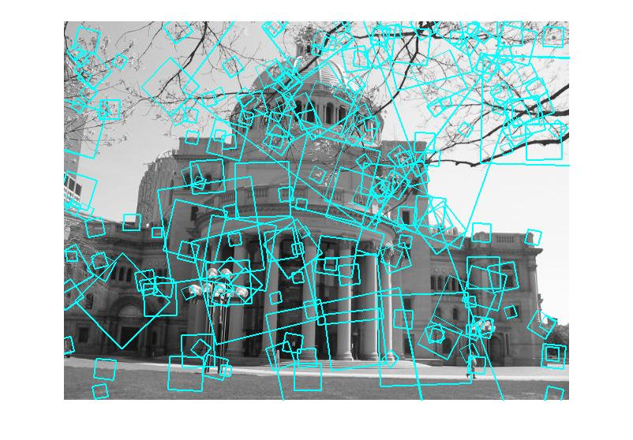
7. Hough Transform — Line Detection
After edge detection, edge pixels are fragmented. The Hough Transform detects geometric shapes (especially lines) by converting the problem to a voting scheme in parameter space.
Polar Line Parameterization
Instead of $y = mx + c$ (fails for vertical lines), use: $\rho = x\cos\theta + y\sin\theta$, where $\rho$ is the perpendicular distance from origin to the line, and $\theta$ is the angle of that perpendicular.
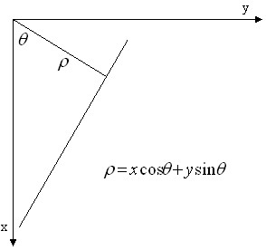
The Voting Algorithm
- Run Canny to get edge pixels $(x_i, y_i)$
- For each edge pixel, compute $\rho = x_i\cos\theta + y_i\sin\theta$ for all $\theta \in [0, 360)$
- Increment the accumulator cell at $(\rho, \theta)$ for each computation
- Peaks in the accumulator = detected lines (many collinear edge pixels voted for the same $(\rho, \theta)$)
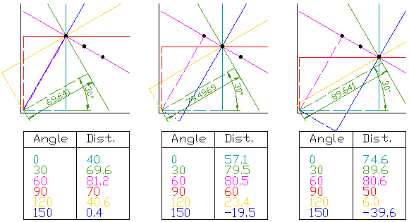
Click in the image space (left) to place edge points. Each point generates a sinusoidal curve in the parameter space (right). Where curves intersect, a line is detected and drawn back in image space.
Post-processing: Extract top candidates by vote count, cluster nearby lines, select the strongest per cluster, filter false detections.
Strengths: Robust to gaps, detects multiple lines simultaneously, extensible to circles/ellipses.
Limitations: Computational cost scales with parameter space dimensionality. Quantization effects and accidental alignments can produce false lines.
8. Harris Corner Detector
Interest points are locations with distinctive local properties. Corners are ideal because they have intensity changes in multiple directions, making them unique and repeatable.
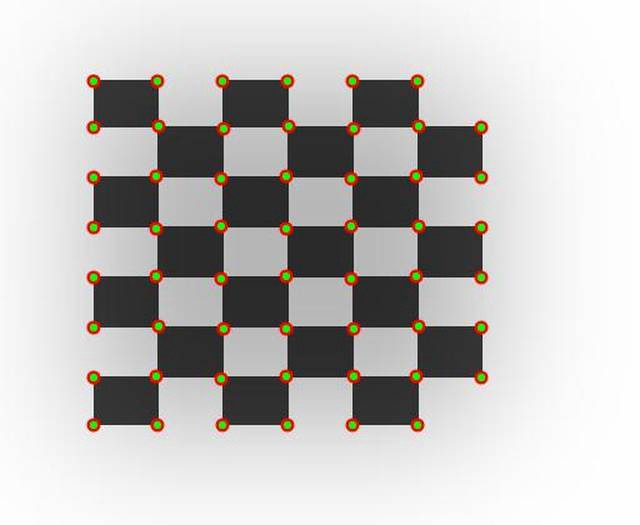
The Mathematics
Intensity change when shifting a window by $(u, v)$:
Using Taylor expansion for small shifts, this becomes:
where $M$ is the structure tensor:
Interpreting R via Eigenvalues
| Region | $\lambda_1$ | $\lambda_2$ | $R$ |
|---|---|---|---|
| Flat | Small | Small | $|R| \approx 0$ |
| Edge | Large | Small | $R < 0$ (negative) |
| Corner | Large | Large, $\lambda_1 \approx \lambda_2$ | $R > 0$ (positive) |
Click on a region in the image below to inspect its structure tensor eigenvalues and Harris response. Adjust $k$ to see how the corner response changes.
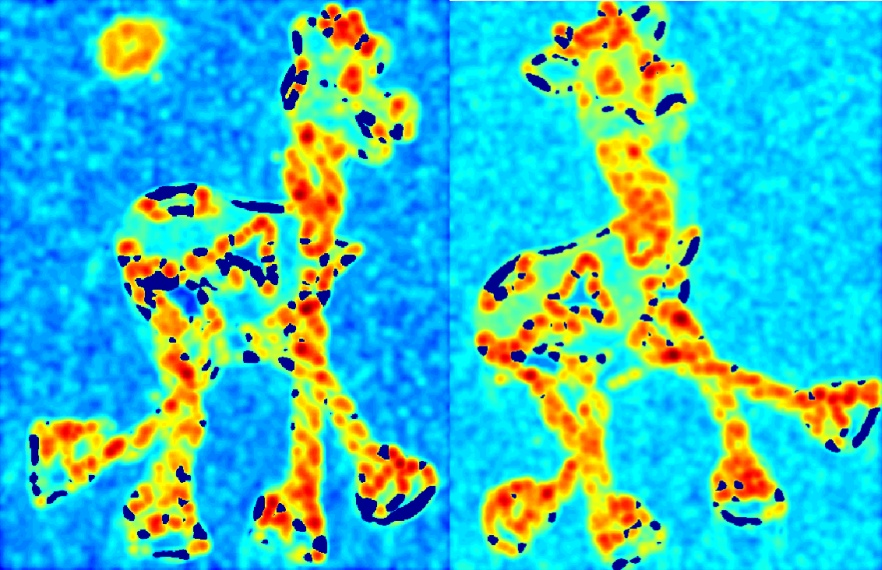
Harris Detector Workflow
- Compute gradients $I_x$, $I_y$ (Sobel filters)
- Compute structure tensor $M$ at each pixel
- Compute $R = \det(M) - k(\text{trace}(M))^2$
- Threshold: keep pixels where $R > \text{threshold}$
- Non-maximum suppression: take only local maxima
| Transformation | Harris invariant? |
|---|---|
| Translation | Yes |
| Rotation | Yes (eigenvalues unchanged) |
| Scale | No (motivates SIFT's pyramid) |
9. Haar-like Features
Haar-like features use simple rectangular masks to capture basic intensity patterns in images. The idea is to detect regions where there is a significant difference in intensity between adjacent rectangular sub-regions.
Types of Haar-like Features
Three main types exist:
- Edge features: Two adjacent rectangles (one white, one black) — detect horizontal or vertical edges
- Line features: Three rectangles (white-black-white or black-white-black) — detect line-like structures
- Four-rectangle features: A $2 \times 2$ checkerboard pattern — detect diagonal structures

Computation
- Assign weight $+1$ to white pixels and $-1$ to black pixels in the mask
- Slide the mask over the image at all positions and scales
- At each position compute the difference: $\text{white sum} - \text{black sum}$
- If $|\text{difference}| > \text{threshold}$: a Haar feature is detected at this position
Given a $5 \times 5$ image and a $4 \times 4$ edge-feature mask (threshold = 10):
- Position 1: $|13 - 12| = 1 < 10$ $\rightarrow$ No feature
- Position 2: $|28 - 24| = 4 < 10$ $\rightarrow$ No feature
- Position 5: $|9 - 43| = 34 > 10$ $\rightarrow$ Feature detected
- Position 6: $|8 - 18| = 10 = 10$ $\rightarrow$ Feature detected
The masks are applied in thousands of different sizes and positions across the image.
Cascaded Detection
In practice, Haar features are organised into a cascade of stages. Early stages use very few features and quickly reject non-face regions; later stages use more features to verify candidates. This makes detection fast in practice.
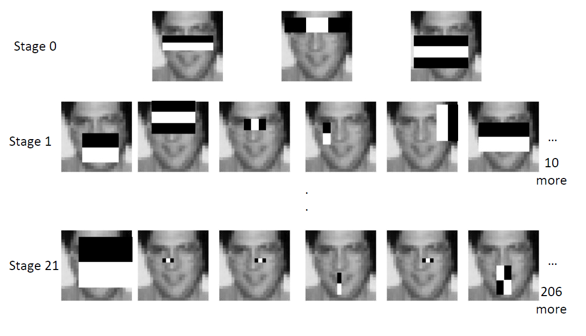
Properties
| Pros | Cons |
|---|---|
| Inexpensive computation (especially with integral images) | Weak classifiers — the same feature can describe many different things |
| Obtainable at any scale | Features are not invariant to rotation or scale |
| Too many generated — costly if used without selection |